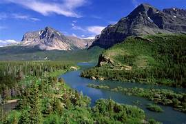

La naturaleza se despliega en una asombrosa variedad de formas, colores y patrones.
Desde los paisajes majestuosos de montañas, ríos y bosques hasta la minuciosa perfección de una flor en floración o las intrincadas maravillas del mundo submarino, la diversidad de la naturaleza es infinitamente inspiradora.

.jpeg)
Cada rincón del planeta alberga ecosistemas únicos y especies adaptadas a condiciones específicas.
Desde la exuberancia tropical hasta la austeridad desértica, la naturaleza nos muestra su capacidad para adaptarse y florecer en distintos entornos.
Esta diversidad es esencial para el equilibrio de los ecosistemas y la supervivencia de muchas especies.
La belleza natural nos cautiva y nos conecta con un sentido de admiración y humildad. Observar la intricada simetría de las alas de una mariposa, el resplandor dorado de un atardecer o la majestuosidad de un cielo estrellado nos recuerda la inmensa maravilla del mundo que nos rodea.


.jpeg)
Proteger y preservar esta diversidad y belleza es un deber compartido.
Cuidar la naturaleza no solo nos enriquece espiritualmente, sino que también asegura un futuro sostenible para las generaciones venideras.